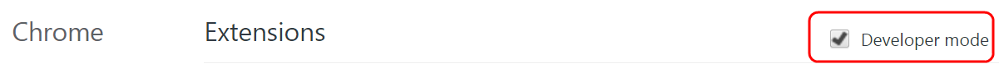
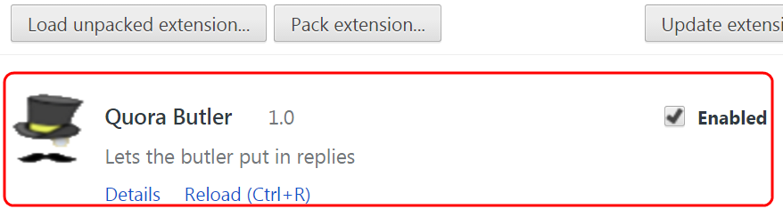
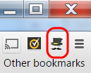
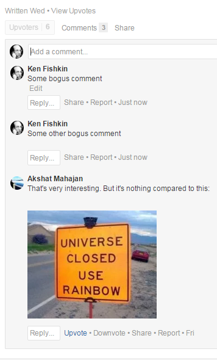
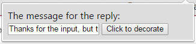
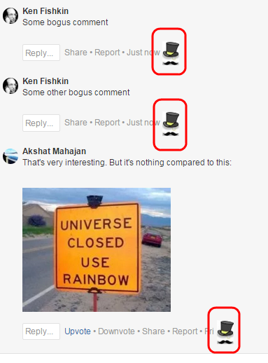
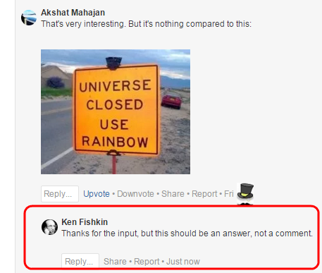

Introduction
The Quora Butler is a litle Chrome extension that gives you a 1-click way
to send a reply to a comment. You can customize what that reply is, the default is
"Thanks for the input. Did you want this to be an answer, instead of a comment?".
Installation
Installation is clunky right now, sorry about that. Do these steps:
- Download the files. Go to
https://github.com/kfishkin/butler,
and click the button that says 'Download ZIP'. Extract that zip file somewhere,
note that it gave you a directory called butler-master.
- Install the extension. In Chrome (this is Chrome only),
go to
chrome://extensions. Make sure you click the box that says 'Developer mode'.

- Now click the button that says
Load unpacked extension.... Navigate to the
butler-master directory you just made, and select it.
You should now see info about the butler appearing on that page:

And you should also see the butler icon appear in your chrome toolbar:

Use
Once the extension has been installed, using it is, well, still kinda clunky,
but here you go:
- Navigate to some Quora page with comments that you might want to reply to.
This could be some answer of yours with lots of comments, some notification about some comment added to an answer of yours, whatever.
For example, here's one that Akshat Mahajan did for me to help in testing this plugin,
you can see it at this page -
I've also added some other bogus comments so you can see how this work when there's
more than one comment on an answer:

- Click on the butler icon in the toolbar. You will see a little form
that looks like this:

- Stuff in whatever text you'd like the 1-step reply to have for its reply.
There is a default, you don't have to do this. In this case, I'll use the default.
- Now, hit the 'Click to decorate' button. You will now see that little 'butler'
icons now appear on your Quora page, one per comment:

- If you then click on one of these icons, it will 'reply' to the comment
that it is next to, with the text you specified in the popup.
For example, suppose we click on the icon by Akshat's comment. Then you will
quickly see your page change to look like this:

And there you have it! Try it out, let me know what you think, also it's on
github so I welcome improvements.